|
Fotosaves
Esta página es parte del sitio www.fotosaves.com.ar , con miles de fotos de aves de Argentina This page is a part of the www.fotosaves.com.ar website, with thousands of my own photos of birds of Argentina |
|
Vist
to Jesse H. Jones Park & Nature Center
3rd February, 2012 |
|
Returning
home to Buenos Aires from a business trip to Chicago, I had an unexpected
layover at Houston. I missed the connecting flight due to a minor
fault on the domestic Chicago-Houston leg, detected before takeoff. This
page has 44 photos, including 10 bird species. The photos are aranged
more-or-less in order of appearance, as I made my way around the reserve. |
|
PHOTOS
(Click o the photos to enlarge) |
Made it to the gates! View of the Nature Center from the entrance Signpost at the entrance Seems like its an important bird area!
American Goldfinch (Carduelis tristis)
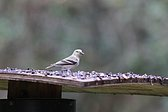
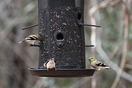
These are my very first photos taken with the new camera setup, a Canon D7 + 300 mm F4 L-series lens!
Northern Cardinal (Cardinalis cardinalis)
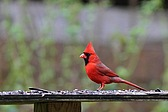
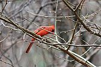
Males...
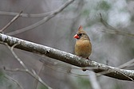
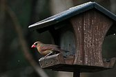
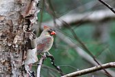
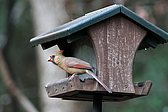
...and females
The seem to grow in swampy areas The emit roots that are known as "knees" - nad they do look like knees! The also demark many of the ponds, known as "cypress ponds" 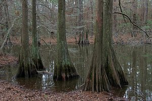
The base of the trees are quite suprising, especially very photogenic 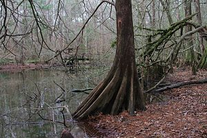
Here's one that is not quite symetrical! Some ponds have overlooks, affording good views of the turtles.
More cypress photos coming later...Red-eared Slider (Trachemys scripta elegans)
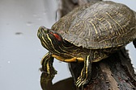
The most common turtle at the reserve. One of the most cold-resistant of turtle species. Once commonly held as pet, now illegal.
Brown Creeper (Certhia americana) - CERTHIDAE family
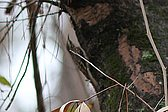
A very por photo, of course - poor light and focusing on a twig. But it was a lifer, and must surely be a close relative of the FURNARIDAE family from South. America, which is my favorite group.
Tufted Titmouse (Baeolophus bicolor)
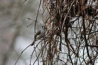
Another poor shot, but also a lifer!
Red Admiral (Vanessa atalanta) - NYMPHALIDAE family - Nymphalinae sub-family
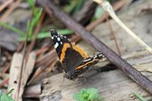
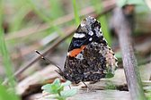
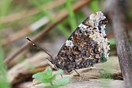
Found across all N. America, Europe, N. Africa, and eastern parts of Asia, including N. India and HymalayasQuestion Mark (Nymphalis interrogationis) - NYMPHALIDAE family - Nymphalinae sub-family
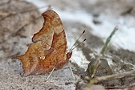
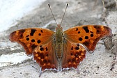
Found across most of N. America
The attractive River Birch trail.
From here onto the Magnolia Trail, where I heard many birds, saw some, but was not all that successful with the camera.Gray Squirrel (Sciurus carolinensis)
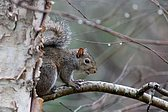
Very common throughout the reserve
Carolina Wren (Thryothorus ludovicianus)
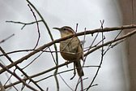
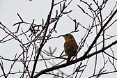
Has a characteristic call. A Lifer!
White-throated Sparrow (Zonotrichia albicollis)
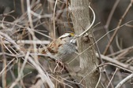
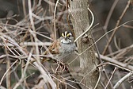
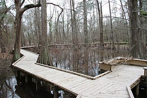
On the walk back to the entrance I crossed this wonderful boardwalk through a cypress pond. 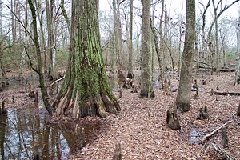
A large tree here.
Not also the knees coming up everywhere!That's it for the bald cypress!
From the shelter of the Nature Center I got some more birds - albeit in very poor light
Cedar Waxwing (Bombycilla cedrorum) - BOMBYCILLIDAE family
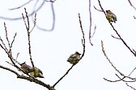
A lovely bird, bit seen very high up and against the light. Another lifer!
Chipping Sparrow (Spizella passerina)
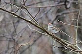
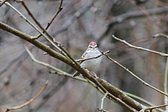
Carolina Chickadee (Poecile carolinensis)
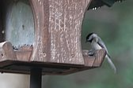
And another lifer!
Mourning Dove (Zenaida macroura)
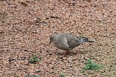
From the safety provided by a pane of glass, I was able to get these and other snake photos!
Southern Copperhead (Agkistrodon contortrix contortrix)
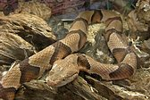
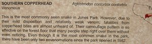
Western Diamondback Rattlesnake (Crotalus atrox)
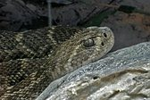
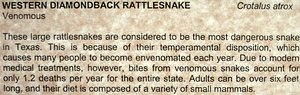
Not expected at the reserve, but it WAS my first live Diamondback!
Hope you liked the photo-report!
The bird photos are not very good, despite the wonderful equipment. The main reason was that the camera was focusing "near" and needed a "microfous adjustment". But the bad light was also to blame, as well as a string of "bad luck" shots, as every time there was a bird there was also a thin branch precisely in the way!
The Jesse H. Jones Park & Nature Center has a website: www.hcp4.net/jones
From here you can download the trail map, learn about the wildlife and be informed about many interesting activities held here, including the Homestead Heritage Day, which - going by the incredible photos I saw at the Nature Center from last year's event, seems a wonderful and fun initiative, not to be missed.
Many thanks again to Greg Taylor. for all his kindness and generosity!
It was great to be able to visit this woderful place. Highly recommended. For me, the chances of returning will probably be more dependant on having another technical hitch on the airplane - but you never know!
Thanks for visiting ths page - Alec Earnshaw
Site gateway: www.fotosaves.com.ar
Portal del sitio: www.fotosaves.com.ar
Main page of this site: www.fotosaves.com.ar
{kind=link}
{kind=link}
{kind=link}
{kind=link}
{kind=link}
{kind=link}
{kind=link}
{kind=link}
{kind=link}
{kind=link}
{kind=link}
{kind=link}
{kind=link}
{kind=link}
{kind=link}
{kind=link}
{kind=link}
{kind=link}
{kind=link}
{kind=link}
{kind=link}
{kind=link}
{kind=link}
{kind=link}
{kind=link}
{kind=link}
{kind=link}
{kind=link}
{kind=link}
{kind=link}
{kind=link}
{kind=link}
{kind=link}
{kind=link}
{kind=link}
{kind=link}
{kind=link}
{kind=link}
{kind=link}
{kind=link}
{kind=link}
{kind=link}
{kind=link}
{kind=link}